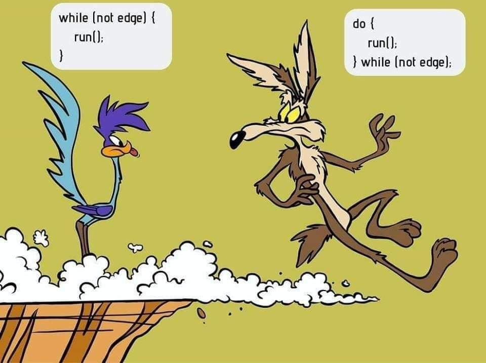

Estructuras de control y Excepciones¶
Introducción¶
En unidades anteriores has podido aprender cuestiones básicas sobre el lenguaje JAVA: definición de variables, tipos de datos, asignación de valores, uso de literales, diferentes operadores que se pueden aplicar, conversiones de tipos, inserción de comentarios, etc. Posteriormente, nos sumergimos de lleno en el mundo de los objetos. Primero hemos conocido su filosofía, para más tarde ir recorriendo los conceptos y técnicas más importantes relacionadas con ellos: Propiedades, métodos, clases, declaración y uso de objetos, librerías, etc.
Vale, parece ser que tenemos los elementos suficientes para comenzar a generar programas escritos en JAVA, ¿Seguro?
Como habrás deducido, con lo que sabemos hasta ahora no es suficiente. Existen múltiples situaciones que nuestros programas deben representar y que requieren tomar ciertas decisiones, ofrecer diferentes alternativas o llevar a cabo determinadas operaciones repetitivamente para conseguir sus objetivos.
Si has programado alguna vez o tienes ciertos conocimientos básicos sobre lenguajes de programación, sabes que la gran mayoría de lenguajes poseen estructuras que permiten a los programadores controlar el flujo de la información de sus programas. Esto realmente es una ventaja para la persona que está aprendiendo un nuevo lenguaje, o tiene previsto aprender más de uno, ya que estas estructuras suelen ser comunes a todos (con algunos cambios de sintaxis o conjunto de reglas que definen las secuencias correctas de los elementos de un lenguaje de programación.). Es decir, si conocías sentencias de control de flujo en otros lenguajes, lo que vamos a ver a lo largo de esta unidad te va a sonar bastante.
Para alguien que no ha programado nunca, un ejemplo sencillo le va a permitir entender qué es eso de las sentencias de control de flujo. Piensa en un fontanero (programador), principalmente trabaja con agua (datos) y se encarga de hacer que ésta fluya por donde él quiere (programa) a través de un conjunto de tuberías, codos, latiguillos, llaves de paso, etc. (sentencias de control de flujo).
Pues esas estructuras de control de flujo son las que estudiaremos, conoceremos su estructura, funcionamiento, cómo utilizarlas y dónde. A través de ellas, al construir nuestros programas podremos hacer que los datos (agua) fluyan por los caminos adecuados para representar la realidad del problema y obtener un resultado adecuado.
Los tipos de estructuras de programación que se emplean para el control del flujo de los datos son los siguientes:
- Secuencia: compuestas por \(0\), \(1\) o \(N\) sentencias que se ejecutan en el orden en que han sido escritas. Es la estructura más sencilla y sobre la que se construirán el resto de estructuras.
- Selección: es un tipo de sentencia especial de decisión y de un conjunto de secuencias de instrucciones asociadas a ella. Según la evaluación de la sentencia de decisión se generará un resultado (que suele ser verdadero o falso) y en función de éste, se ejecutarán una secuencia de instrucciones u otra. Las estructuras de selección podrán ser simples, compuestas y múltiples.
- Iteración: es un tipo de sentencia especial de decisión y una secuencia de instrucciones que pueden ser repetidas según el resultado de la evaluación de la sentencia de decisión. Es decir, la secuencia de instrucciones se ejecutará repetidamente si la sentencia de decisión arroja un valor correcto, en otro la estructura de repetición se detendrá.
Además de las sentencias típicas de control de flujo, en esta unidad haremos una revisión de las sentencias de salto, que aunque no son demasiado recomendables, es necesario conocerlas. Como nuestros programas podrán generar errores y situaciones especiales, echaremos un vistazo al manejo de excepciones en JAVA. Posteriormente, analizaremos la mejor manera de llevar a cabo las pruebas de nuestros programas y la depuración de los mismos. Y finalmente, aprenderemos a valorar y utilizar las herramientas de documentación de programas.
Sentencias y bloques¶
Este epígrafe lo utilizaremos para reafirmar cuestiones que son obvias y que en el transcurso de anteriores unidades se han dado por sabidas. Aunque, a veces, es conveniente recordar. Lo haremos como un conjunto de FAQ's:
-
¿Cómo se escribe un programa sencillo? Si queremos que un programa sencillo realice instrucciones o sentencias para obtener un determinado resultado, es necesario colocar éstas una detrás de la otra, exactamente en el orden en que deben ejecutarse.
-
¿Podrían colocarse todas las sentencias una detrás de otra, separadas por puntos y comas en una misma línea?, claro que sí, pero no es muy recomendable. Cada sentencia debe estar escrita en una línea, de esta manera tu código será mucho más legible y la localización de errores en tus programas será más sencilla y rápida. De hecho, cuando se utilizan herramientas de programación, los errores suelen asociarse a un número o números de línea.
-
¿Puede una misma sentencia ocupar varias líneas en el programa?, sí. Existen sentencias que, por su tamaño, pueden generar varias líneas. Pero siempre finalizarán con un punto y coma.
-
¿En Java todas las sentencias se terminan con punto y coma?, Efectivamente. Si detrás de una sentencia ha de venir otra, pondremos un punto y coma. Escribiendo la siguiente sentencia en una nueva línea. Pero en algunas ocasiones, sobre todo cuando utilizamos estructuras de control de flujo, detrás de la cabecera de una estructura de este tipo no debe colocarse punto y coma. No te preocupes, lo entenderás cuando analicemos cada una de ellas.
-
¿Qué es la sentencia nula en Java? La sentencia nula es una línea que no contiene ninguna instrucción y en la que sólo existe un punto y coma. Como su nombre indica, esta sentencia no hace nada.
-
¿Qué es un bloque de sentencias? Es un conjunto de sentencias que se encierra entre llaves y que se ejecutaría como si fuera una única orden. Sirve para agrupar sentencias y para clarificar el código. Los bloques de sentencias son utilizados en Java en la práctica totalidad de estructuras de control de flujo, clases, métodos, etc. La siguiente tabla muestra dos formas de construir un bloque de sentencias.
Bloque de sentencias 1 Bloque de sentencias 2 {sentencia1; sentencia2; ...; sentenciaN;}{
sentencia1;
sentencia2;
...;
sentenciaN;} -
¿En un bloque de sentencias, éstas deben estar colocadas con un orden exacto? En ciertos casos sí, aunque si al final de su ejecución se obtiene el mismo resultado, podrían ocupar diferentes posiciones en nuestro programa.
DEBES CONOCER Observa los tres archivos que te ofrecemos a continuación y compara su código fuente. Verás que los tres obtienen el mismo resultado, pero la organización de las sentencias que los componen es diferente entre ellos.
Ejemplo 1:
1 2 3 4 5 6 7 8 9 10 11 12 13 14 15 16 | |
En este primer archivo, las sentencias están colocadas en orden secuencial.
Ejemplo 2:
1 2 3 4 5 6 7 8 9 10 11 12 13 14 15 16 17 | |
En este segundo archivo, se declaran al principio las variables necesarias. En Java no es imprescindible hacerlo así, pero sí que antes de utilizar cualquier variable ésta debe estar previamente declarada. Aunque la declaración de dicha variable puede hacerse en cualquier lugar de nuestro programa.
Ejemplo 3:
1 2 3 4 5 6 7 8 9 10 11 12 13 14 15 16 17 18 19 20 21 22 23 24 25 | |
En este tercer archivo, podrás apreciar que se ha organizado el código en las siguientes partes: declaración de variables, petición de datos de entrada, procesamiento de dichos datos y obtención de la salida. Este tipo de organización está más estandarizada y hace que nuestros programas ganen en legibilidad.
Atención
Construyas de una forma o de otra tus programas, debes tener en cuenta siempre en Java las siguientes premisas: - Declara cada variable antes de utilizarla. - Inicializa con un valor cada variable la primera vez que la utilices. No es recomendable usar variables no inicializadas en nuestros programas, pueden provocar errores o resultados imprevistos.
Estructuras de selección¶
¿Cómo conseguimos que nuestros programas puedan tomar decisiones? Para comenzar, lo haremos a través de las estructuras de selección. Estas estructuras constan de una sentencia especial de decisión y de un conjunto de secuencias de instrucciones.
El funcionamiento es sencillo, la sentencia de decisión será evaluada y ésta devolverá un valor (verdadero o falso), en función del valor devuelto se ejecutará una secuencia de instrucciones u otra.
Por ejemplo, si el valor de una variable es mayor o igual que 5 se imprime por pantalla la palabra APROBADO y si es menor, se imprime SUSPENSO. Para este ejemplo, la comprobación del valor de la variable será la sentencia especial de decisión. La impresión de la palabra APROBADO será una secuencia de instrucciones y la impresión de la palabra SUSPENSO será otra. Cada secuencia estará asociada a cada uno de los resultados que puede arrojar la evaluación de la sentencia especial de decisión. Las estructuras de selección se dividen en:
- Estructuras de selección simples o estructura if.
- Estructuras de selección compuesta o estructura ifelse.
- Estructuras de selección basadas en el operador condicional.
- Estructuras de selección múltiples o estructura switch.
A continuación, detallaremos las características y funcionamiento de cada una de ellas. Es importante que a través de los ejemplos que vamos a ver, puedas determinar en qué circunstancias utilizar cada una de estas estructuras. Aunque un mismo problema puede ser resuelto con diferentes estructuras e incluso, con diferentes combinaciones de éstas.
Estructura if, if else, if else if¶
La estructura if es una estructura de selección o estructura condicional, en la que se evalúa una expresión lógica o sentencia de decisión y en función del resultado, se ejecuta una sentencia o un bloque de éstas. La estructura if puede presentarse de las siguientes formas:
Estructura if simple:
1 2 | |
1 2 3 4 5 6 | |
Si la evaluación de la expresión‐lógica ofrece un resultado verdadero, se ejecuta la sentencia1 o bien el bloque de sentencias asociado. Si el resultado de dicha evaluación es falso, no se ejecutará ninguna instrucción asociada a la estructura condicional.
Estructura if de doble alternativa.
1 2 3 4 5 | |
1 2 3 4 5 6 7 8 9 | |
Si la evaluación de la expresión‐lógica ofrece un resultado verdadero, se ejecutará la primera sentencia o el primer bloque de sentencias. Si, por el contrario, la evaluación de la expresión‐lógica ofrece un resultado falso, no se ejecutará la primera sentencia o el primer bloque y sí se ejecutará la segunda sentencia o el segundo bloque.
Ejemplo
Haciendo una interpretación cercana al pseudocódigo tendríamos que si se cumple la condición (expresión lógica), se ejecutará un conjunto de instrucciones y si no se cumple, se ejecutará otro conjunto de instrucciones.
Hay que tener en cuenta que la cláusula else de la sentencia if no es obligatoria. En algunos casos no necesitaremos utilizarla, pero sí se recomienda cuando es necesario llevar a cabo alguna acción en el caso de que la expresión lógica no se cumpla.
En aquellos casos en los que no existe cláusula else, si la expresión lógica es falsa, simplemente se continuarán ejecutando las siguientes sentencias que aparezcan bajo la estructura condicional if.
Los condicionales if e if-else pueden anidarse, de tal forma que dentro de un bloque de sentencias puede incluirse otro if o if-else. El nivel de anidamiento queda a criterio del programador, pero si éste es demasiado profundo podría provocar problemas de eficiencia y legibilidad en el código. En otras ocasiones, un nivel de anidamiento excesivo puede denotar la necesidad de utilización de otras estructuras de selección más adecuadas.
Cuando se utiliza anidamiento de este tipo de estructuras, es necesario poner especial atención en saber a qué if está asociada una cláusula else. Normalmente, un else estará asociado con el if inmediatamente superior o más cercano que exista dentro del mismo bloque y que no se encuentre ya asociado a otro else.
Estructura if else if.
Esta estructura es una alternativa a la anidación de sentencias if else funciona de modo que si se cumple una condición ejecuta unas sentencias y el caso contrario comprueba otra condición ejecutando unas sentencias si se cumple y así sucesivamente. Veamos un ejemplo con if anidados:
1 2 3 4 5 6 7 8 9 10 11 12 13 | |
El mismo ejemplo usando if else if quedaría de este modo:
1 2 3 4 5 6 7 8 9 | |
Estructura switch¶
¿Qué podemos hacer cuando nuestro programa debe elegir entre más de dos alternativas?, una posible solución podría ser emplear estructuras if anidadas, aunque no siempre esta solución es la más eficiente. Cuando estamos ante estas situaciones podemos utilizar la estructura de selección múltiple switch. En la siguiente tabla se muestra tanto la sintaxis, como el funcionamiento de esta estructura.
Sintaxis switch:
1 2 3 4 5 6 7 8 9 10 11 12 13 14 15 16 | |
Condiciones:
- Donde expresión debe ser del tipo
char,byte,shortoint, y las constantes de cadacasedeben ser de este tipo o de un tipo compatible. - La
expresiondebe ir entre paréntesis. - Cada
casellevará asociado unvalory se finalizará con dos puntos (:). - El bloque de sentencias asociado a la cláusula
defaultpuede finalizar con una sentencia de rupturabreako no.
Funcionamiento:
- Las diferentes alternativas de esta estructura estarán precedidas de la cláusula case que se ejecutará cuando el valor asociado al case coincida con el valor obtenido al evaluar la expresión del switch.
- En las cláusulas case, no pueden indicarse expresiones condicionales, rangos de valores o listas de valores. (otros lenguajes de programación sí lo permiten). Habrá que asociar una cláusula case a cada uno de los valores que deban ser tenidos en cuenta.
- La cláusula default será utilizada para indicar un caso por defecto, las sentencias asociadas a la cláusula default se ejecutarán si ninguno de los valores indicados en las cláusulas case coincide con el resultado de la evaluación de la expresión de la estructura switch.
- La cláusula default puede no existir, y por tanto, si ningún case ha sido activado finalizaría el switch.
- Cada cláusula case puede llevar asociadas una o varias sentencias, sin necesidad de delimitar dichos bloques por medio de llaves.
- En el momento en el que el resultado de la evaluación de la expresión coincide con alguno de los valores asociados a las cláusulas case, se ejecutarán todas las instrucciones asociadas hasta la aparición de una sentencia break de ruptura. (la sentencia break se analizará en epígrafes posteriores)
Expresiones switch mejoradas¶
En las novedades de Java 12 se añadió la posibilidad de los switch fueran expresiones que retornan un valor en vez de sentencias y se evita el uso de la palabra reservada break.
Sentencia Switch mejorada
1 2 3 4 5 6 7 8 9 | |
En Java 13 en vez de únicamente el valor a retornar se permite crear bloques de sentencias para cada rama case y retornar el valor con la palabra reservada yield. En los bloques de sentencias puede haber algún cálculo más complejo que directamente retornar el valor deseado.
1 2 3 4 5 6 7 8 9 10 11 12 13 14 15 16 17 18 19 20 21 22 23 | |
En resumen, se ha de comparar el valor de una expresión con un conjunto de constantes, si el valor de la expresión coincide con algún valor de dichas constantes, se ejecutarán los bloques de instrucciones asociados a cada una de ellas. Si no existiese coincidencia, se ejecutarían una serie de instrucciones por defecto.
Estructuras de repetición¶
Nuestros programas ya son capaces de controlar su ejecución teniendo en cuenta determinadas condiciones, pero aún hemos de aprender un conjunto de estructuras que nos permita repetir una secuencia de instrucciones determinada. La función de estas estructuras es repetir la ejecución de una serie de instrucciones teniendo en cuenta una condición.
A este tipo de estructuras se las denomina estructuras de repetición, estructuras repetitivas, bucles o estructuras iterativas. En Java existen cuatro clases de bucles:
- Bucle
for(repite para) - Bucle
for/in(repite para cada), akafor each - Bucle
while(repite mientras) - Bucle
do while(repite hasta)
Los bucles for y for/in se consideran bucles controlados por contador. Por el contrario, los bucles while y do...while se consideran bucles controlados por sucesos.
La utilización de unos bucles u otros para solucionar un problema dependerá en gran medida de las siguientes preguntas:
- ¿Sabemos a priori cuántas veces necesitamos repetir un conjunto de instrucciones?
- ¿Sabemos si hemos de repetir un conjunto de instrucciones si una condición satisface un conjunto de valores?
- ¿Sabemos hasta cuándo debemos estar repitiendo un conjunto de instrucciones?
- ¿Sabemos si hemos de estar repitiendo un conjunto de instrucciones mientras se cumpla una condición?
Estas y otras preguntas tendrán su respuesta en cuanto analicemos cada una de estructuras repetitivas en detalle.
Definición
Estudia cada tipo de estructura repetitiva, conoce su funcionamiento y podrás llegar a la conclusión de que algunos de estos bucles son equivalentes entre sí. Un mismo problema, podrá ser resuelto empleando diferentes tipos de bucles y obtener los mismos resultados.
Estructura for¶
Hemos indicado anteriormente que el bucle for es un bucle controlado por contador. Este tipo de bucle tiene las siguientes características:
- Se ejecuta un número determinado de veces.
- Utiliza una variable contadora que controla las iteraciones del bucle.
En general, existen tres operaciones que se llevan a cabo en este tipo de bucles:
- Se inicializa la variable contadora.
- Se evalúa el valor de la variable contador, por medio de una comparación de su valor con el número de iteraciones especificado.
- Se modifica o actualiza el valor del contador a través de incrementos o decrementos de éste, en cada una de las iteraciones.
Ejemplo
La inicialización de la variable contadora debe realizase correctamente para garantizar que el bucle lleve a cabo, al menos, la primera repetición de su código interno. La condición de terminación del bucle debe variar en el interior del mismo, de no ser así, podemos caer en la creación de un bucle infinito. Cuestión que se debe evitar por todos los medios. Es necesario estudiar el número de veces que se repite el bucle, pues debe ajustarse al número de veces estipulado.
Sintaxis estructura for con una única sentencia:
1 2 | |
Sintaxis estructura for con un bloque de sentencias:
1 2 3 4 5 6 | |
Donde...:
inicializaciónes una expresión en la que se inicializa una variable de control, que será la encargada de controlar el final del bucle.condiciónes una expresión que evaluará la variable de control. Mientras la condición sea falsa, el cuerpo del bucle estará repitiéndose. Cuando la condición se cumpla, terminará la ejecución del bucle.iteraciónindica la manera en la que la variable de control va cambiando en cada iteración del bucle. Podrá ser mediante incremento o decremento, y no solo de uno en uno.
Estructura for/in¶
Junto a la estructura for, for/in también se considera un bucle controlado por contador. Este bucle es una mejora incorporada en la versión 5.0 de Java.
Este tipo de bucles permite realizar recorridos sobre arrays y colecciones de objetos. Los arrays son colecciones de variables que tienen el mismo tipo y se referencian por un nombre común. Así mismo, las colecciones de objetos son objetos que se dice son iterables, o que se puede iterar sobre ellos.
Este bucle es nombrado también como bucle for mejorado, o bucle foreach. En otros lenguajes de programación existen bucles muy parecidos a este.
La sintaxis for es la siguiente:
1 2 3 4 5 | |
Donde...:
expresiones un array o una colección de objetos.declaraciónes la declaración de una variable cuyo tipo sea compatible con expresión. Normalmente, será el tipo y el nombre de la variable a declarar.
El funcionamiento consiste en que para cada elemento de la expresión, guarda el elemento en la variable declarada y haz las instrucciones contenidas en el bucle. Después, en cada una de las iteraciones del bucle tendremos en la variable declarada el elemento actual de la expresión. Por tanto, para el caso de los arrays y de las colecciones de objetos, se recorrerá desde el primer elemento que los forma hasta el último.
Observa el contenido del código representado en la siguiente imagen, puedes apreciar cómo se construye un bucle de este tipo y su utilización sobre un array.
Los bucles for/in permitirán al programador despreocuparse del número de veces que se ha de iterar, pero no sabremos en qué iteración nos encontramos salvo que se añada artificialmente alguna variable contadora que nos pueda ofrecer esta información.
Información
Esta estructura tomará sentido cuando avancemos en el curso y veamos los Arrays y las colecciones de Objetos.
Estructura while¶
El bucle while es la primera de las estructuras de repetición controladas por sucesos que vamos a estudiar. La utilización de este bucle responde al planteamiento de la siguiente pregunta: ¿Qué podemos hacer si lo único que sabemos es que se han de repetir un conjunto de instrucciones mientras se cumpla una determinada condición?.
La característica fundamental de este tipo de estructura repetitiva estriba en ser útil en aquellos casos en los que las instrucciones que forman el cuerpo del bucle podría ser necesario ejecutarlas o no. Es decir, en el bucle while siempre se evaluará la condición que lo controla, y si dicha condición es cierta, el cuerpo del bucle se ejecutará una vez, y se seguirá ejecutando mientras la condición sea cierta. Pero si en la evaluación inicial de la condición ésta no es verdadera, el cuerpo del bucle no se ejecutará.
¡Atención!
Es imprescindible que en el interior del bucle while se realice alguna acción que modifique la condición que controla la ejecución del mismo, en caso contrario estaríamos ante un bucle infinito.
Sintaxis estructura while con una única sentencia:
1 2 | |
Sintaxis estructura while con un bloque de sentencias:
1 2 3 4 5 | |
Funcionamiento: Mientras la condición sea cierta, el bucle se repetirá, ejecutando la/s instrucción/es de su interior.
En el momento en el que la condición no se cumpla, el control del flujo del programa pasará a la siguiente instrucción que exista justo detrás del bucle while.
La condición se evaluará siempre al principio, y podrá darse el caso de que las instrucciones contenidas en él no lleguen a ejecutarse nunca si no se satisface la condición de partida.
Estructura do while¶
La segunda de las estructuras repetitivas controladas por sucesos es do while. En este caso, la pregunta que nos planteamos es la siguiente: ¿Qué podemos hacer si lo único que sabemos es que se han de ejecutar, al menos una vez, un conjunto de instrucciones y seguir repitiéndose hasta que se cumpla una determinada condición?.
La característica fundamental de este tipo de estructura repetitiva estriba en ser útil en aquellos casos en los que las instrucciones que forman el cuerpo del bucle necesitan ser ejecutadas, al menos, una vez y repetir su ejecución hasta que la condición sea verdadera. Por tanto, en esta estructura repetitiva siempre se ejecuta el cuerpo del bucle una primera vez.
Es imprescindible que en el interior del bucle se realice alguna acción que modifique la condición que controla la ejecución del mismo, en caso contrario estaríamos ante un bucle infinito.
Sintaxis estructura while con una única sentencia:
1 2 3 | |
Sintaxis estructura while con un bloque de sentencias:
1 2 3 4 5 | |
Funcionamiento:
El cuerpo del bucle se ejecuta la primera vez, a continuación se evaluará la condición y, si ésta es falsa, el cuerpo el bucle volverá a repetirse. El bucle finalizará cuando la evaluación de la condición sea verdadera.
En ese momento el control del flujo del programa pasará a la siguiente instrucción que exista justo detrás del bucle do‐while. La condición se evaluará siempre después de una primera ejecución del cuerpo del bucle, por lo que no se dará el caso de que las instrucciones contenidas en él no lleguen a ejecutarse nunca.

Bucle infinito¶
Uno de los errores más comunes al implementar cualquier tipo de bucle es que nunca pueda salir, es decir, el bucle se ejecuta durante un número infinito de veces.
Podemos provocarlo intencionadamente como en estos dos ejemplos equivalentes:
(NO RECOMENDABLE)
1 2 3 | |
1 2 3 | |
O sucede cuando la condición falla por alguna razón, como en el siguiente ejemplo:
Bucle infinito
1 2 3 4 5 6 7 8 9 10 11 12 13 14 15 16 17 18 19 20 | |
Otro inconveniente es que puede estar agregando algo en su objeto de colección a través de un bucle y puede quedarse sin memoria. Si intenta ejecutar el siguiente programa, después de un tiempo, se producirá una excepción de falta de memoria. En este ejemplo se hace uso de la colección ArrayList, pero de momento solo necesitamos saber que se comporta como un casillero al que vamos asignando elementos (que evidentemente ocupan memoria)
Provocar falta de memoria:
1 2 3 4 5 6 7 8 9 10 11 12 13 | |
Salida:
1 2 3 4 5 6 7 | |
Estructuras de salto¶
¿Saltar o no saltar? he ahí la cuestión. En la gran mayoría de libros de programación y publicaciones de Internet, siempre se nos recomienda que prescindamos de sentencias de salto incondicional, es más, se desaconseja su uso por provocar una mala estructuración del código y un incremento en la dificultad para el mantenimiento de los mismos. Pero Java incorpora ciertas sentencias o estructuras de salto que es necesario conocer y que pueden sernos útiles en algunas partes de nuestros programas.
Estas estructuras de salto corresponden a las sentencias break, continue, las etiquetas de salto y la sentencia return. Pasamos ahora a analizar su sintaxis y funcionamiento.
Sentencias break y continue¶
Se trata de dos instrucciones que permiten modificar el comportamiento de otras estructuras o sentencias de control, simplemente por el hecho de estar incluidas en algún punto de su secuencia de instrucciones.
La sentencia break incidirá sobre las estructuras de control switch, while, for y do while del siguiente modo:
-
Si aparece una sentencia
breakdentro de la secuencia de instrucciones de cualquiera de las estructuras mencionadas anteriormente, dicha estructura terminará inmediatamente. -
Si aparece una sentencia
breakdentro de un bucle anidado sólo finalizará la sentencia de iteración más interna, el resto se ejecuta de forma normal.
Es decir, que break sirve para romper el flujo de control de un bucle, aunque no se haya cumplido la condición del bucle. Si colocamos un break dentro del código de un bucle, cuando se alcance el break, automáticamente se saldrá del bucle pasando a ejecutarse la siguiente instrucción inmediatamente después de él.
La sentencia continue incidirá sobre las sentencias o estructuras de control while, for y do while del siguiente modo:
- Si aparece una sentencia
continuedentro de la secuencia de instrucciones de cualquiera de las sentencias anteriormente indicadas, dicha sentencia dará por terminada la iteración actual y se ejecuta una nueva iteración, evaluando de nuevo la expresión condicional del bucle. - Si aparece en el interior de un bucle anidado solo afectará a la sentencia de iteración más interna, el resto se ejecutaría de forma normal.
Es decir, la sentencia continue forzará a que se ejecute la siguiente iteración del bucle, sin tener en cuenta las instrucciones que pudiera haber después del continue, y hasta el final del código del bucle.
Etiquetas de salto¶
¡Atención!
Los saltos incondicionales y en especial, saltos a una etiqueta son totalmente desaconsejables.
Java permite asociar etiquetas cuando se va a realizar un salto. De este modo puede conseguirse algo más de legibilidad en el código.
Las estructuras de salto break y continue, pueden tener asociadas etiquetas. Es a lo que se llama un break etiquetado o un continue etiquetado. Pero sólo se recomienda su uso cuando se hace necesario salir de bucles anidados hacia diferentes niveles. ¿Y cómo se crea un salto a una etiqueta? En primer lugar, crearemos la etiqueta mediante un identificador seguido de dos puntos (:). A continuación, se escriben las sentencias Java asociadas a dicha etiqueta encerradas entre llaves. Por así decirlo, la creación de una etiqueta es como fijar un punto de salto en el programa para poder saltar a él desde otro lugar de dicho programa.
¿Cómo se lleva a cabo el salto? Es sencillo, en el lugar donde vayamos a colocar la sentencia break o continue, añadiremos detrás el identificador de la etiqueta. Con ello, conseguiremos que el salto se realice a un lugar determinado.
La sintaxis será:
1 | |
Curiosidad
Quizá a aquellos/as que han programado en HTML les suene esta herramienta, ya que tiene cierta similitud con las anclas que pueden crearse en el interior de una página web, a las que nos llevará el hiperenlace o link que hayamos asociado. También para aquellos/as que han creado alguna vez archivos por lotes o archivos batch bajo MSDOS es probable que también les resulte familiar el uso de etiquetas, pues la sentencia GOTO que se utilizaba en este tipo de archivos, hacía saltar el flujo del programa al lugar donde se ubicaba la etiqueta que se indicara en dicha sentencia.
return¶
Ya sabemos cómo modificar la ejecución de bucles y estructuras condicionales múltiples, pero ¿Podríamos modificar la ejecución de un método? ¿Es posible hacer que éstos detengan su ejecución antes de que finalice el código asociado a ellos?. Sí es posible, a través de la sentencia return podremos conseguirlo. La sentencia return puede utilizarse de dos formas:
- Para terminar la ejecución del método donde esté escrita, con lo que transferirá el control al punto desde el que se hizo la llamada al método, continuando el programa por la sentencia inmediatamente posterior.
- Para devolver o retornar un valor, siempre que junto a
returnse incluya una expresión de un tipo determinado. Por tanto, en el lugar donde se invocó al método se obtendrá el valor resultante de la evaluación de la expresión que acompañaba al método.
Importante
En general, una sentencia return suele aparecer al final de un método, de este modo el método tendrá una entrada y una salida. También es posible utilizar una sentencia return en cualquier punto de un método, con lo que éste finalizará en el lugar donde se encuentre dicho return. No será recomendable incluir más de un return en un método y por regla general, deberá ir al final del método como hemos comentado.
El valor de retorno es opcional, si lo hubiera debería de ser del mismo tipo o de un tipo compatible al tipo del valor de retorno definido en la cabecera del método, pudiendo ser desde un entero a un objeto creado por nosotros. Si no lo tuviera, el tipo de retorno sería void, y return serviría para salir del método sin necesidad de llegar a ejecutar todas las instrucciones que se encuentran después del return.
Excepciones¶
A lo largo de nuestro aprendizaje de Java nos hemos topado en alguna ocasión con errores, pero éstos suelen ser los que nos ha indicado el compilador. Un punto y coma por aquí, un nombre de variable incorrecto por allá, pueden hacer que nuestro compilador nos avise de estos descuidos.
Cuando los vemos, se corrigen y obtenemos nuestra clase compilada correctamente.
Pero, ¿Sólo existen este tipo de errores? ¿Podrían existir errores no sintácticos en nuestros programas?. Está claro que sí, un programa perfectamente compilado en el que no existen errores de sintaxis, puede generar otros tipos de errores que quizá aparezcan en tiempo de ejecución. A estos errores se les conoce como excepciones.
Aprenderemos a gestionar de manera adecuada estas excepciones y tendremos la oportunidad de utilizar el potente sistema de manejo de errores que Java incorpora. La potencia de este sistema de manejo de errores radica en:
- Que el código que se encarga de manejar los errores, es perfectamente identificable en los programas. Este código puede estar separado del código que maneja la aplicación.
- Que Java tiene una gran cantidad de errores estándar asociados a multitud de fallos comunes, como por ejemplo divisiones por cero, fallos de entrada de datos, etc. Al tener tantas excepciones localizadas, podemos gestionar de manera específica cada uno de los errores que se produzcan.
En Java se pueden preparar los fragmentos de código que pueden provocar errores de ejecución para que si se produce una excepción, el flujo del programa es lanzado (throw) hacia ciertas zonas o rutinas que han sido creadas previamente por el programador y cuya finalidad será el tratamiento efectivo de dichas excepciones. Si no se captura la excepción, el programa se detendrá con toda probabilidad.
En Java, las excepciones están representadas por clases. El paquete java.lang.Exception y sus subpaquetes contienen todos los tipos de excepciones. Todas las excepciones derivarán de la clase Throwable, existiendo clases más específicas. Por debajo de la clase Throwable existen las clases Error y Exception. Error es una clase que se encargará de los errores que se produzcan en la máquina virtual, no en nuestros programas. Y la clase Exception será la que a nosotros nos interese conocer, pues gestiona los errores provocados en los programas.
Java lanzará una excepción en respuesta a una situación poco usual. Cuando se produce un error se genera un objeto asociado a esa excepción. Este objeto es de la clase Exception o de alguna de sus herederas. Este objeto se pasa al código que se ha definido para manejar la excepción. Dicho código puede manipular las propiedades del objeto Exception.
El programador también puede lanzar sus propias excepciones. Las excepciones en Java serán objetos de clases derivadas de la clase base Exception. Existe toda una jerarquía de clases derivada de la clase base Exception. Estas clases derivadas se ubican en dos grupos principales:
- Las excepciones en tiempo de ejecución, que ocurren cuando el programador no ha tenido cuidado al escribir su código.
- Las excepciones que indican que ha sucedido algo inesperado o fuera de control.
En la siguiente imagen te ofrecemos una aproximación a la jerarquía de las excepciones en Java.
classDiagram
class Object
class Throwable
Object <|-- Throwable
namespace Comprobadas_Checked {
class Exception
class IOException
class UsersExceptions
class Other1["..."]
class Other2["..."]
class Other3["..."]
}
namespace No Comprobadas_Unchecked {
class RuntimeException
class Error
class ArithmeticException
class ArrayIndexOutOfBoundException
class Other4["..."]
}
Exception <|-- Other1
Exception <|-- IOException
IOException <|-- Other2
IOException <|-- Other3
Exception <|-- UsersExceptions
Exception <|-- RuntimeException
RuntimeException <|-- ArithmeticException
RuntimeException <|-- ArrayIndexOutOfBoundException
RuntimeException <|-- Other4
Throwable <|-- Exception
Throwable <|-- Error
Y aquí tenemos una lista de las más habituales con su explicación:
| NOMBRE | DESCRIPCIÓN |
|---|---|
| FileNotFoundException | Lanza una excepción cuando el fichero no se encuentra. |
| ClassNotFoundException | Lanza una excepción cuando no existe la clase. |
| EOFException | Lanza una excepción cuando llega al final del fichero. |
| ArrayIndexOutOfBoundsException | Lanza una excepción cuando se accede a una posición de un array que no exista. |
| NumberFormatException | Lanza una excepción cuando se procesa un numero pero este es un dato alfanumérico. |
| NullPointerException | Lanza una excepción cuando intentando acceder a un miembro de un objeto para el que todavía no hemos reservado memoria. |
| IOException | Generaliza muchas excepciones anteriores. La ventaja es que no necesitamos controlar cada una de las excepciones. |
| Exception | Es la clase padre de IOException y de otras clases. Tiene la misma ventaja que IOException. |
| ArithmeticException | Se lanza por ejemplo, cuando intentamos dividir un número entre cero. |
El manejo de excepciones¶
Como hemos comentado, siempre debemos controlar las excepciones que se puedan producir o de lo contrario nuestro software quedará expuesto a fallos. Las excepciones pueden tratarse de dos formas:
- Interrupción. En este caso se asume que el programa ha encontrado un error irrecuperable. La operación que dio lugar a la excepción se anula y se entiende que no hay manera de regresar al código que provocó la excepción. Es decir, la operación que dio originó el error, se anula.
- Reanudación. Se puede manejar el error y regresar de nuevo al código que provocó el error.
Java emplea la primera forma, pero puede simularse la segunda mediante la utilización de un bloque try en el interior de un while, que se repetirá hasta que el error deje de existir. En la sección de ejemplos de puedes ver como poner el try-catch dentro de un do while.
Capturar una excepción¶
Para poder capturar excepciones, emplearemos la estructura de captura de excepciones try‐catch‐finally.
Básicamente, para capturar una excepción lo que haremos será declarar bloques de código donde es posible que ocurra una excepción. Esto lo haremos mediante un bloque try (intentar). Si ocurre una excepción dentro de estos bloques, se lanza una excepción. Estas excepciones lanzadas se pueden capturar por medio de bloques catch. Será dentro de este tipo de bloques donde se hará el manejo de las excepciones.
Sintaxis try-catch:
1 2 3 4 5 6 7 8 9 10 11 | |
En esta estructura, la parte catch puede repetirse tantas veces como excepciones diferentes se deseen capturar. La parte finally es opcional y, si aparece, solo podrá hacerlo una vez.
Cada catch maneja un tipo de excepción. Cuando se produce una excepción, se busca el catch que posea el manejador de excepción adecuado, será el que utilice el mismo tipo de excepción que se ha producido. Esto puede causar problemas si no se tiene cuidado, ya que la clase Exception es la superclase de todas las demás. Por lo que si se produjo, por ejemplo, una excepción de tipo Aritmethic Exception y el primer catch captura el tipo genérico Exception, será ese catch el que se ejecute y no los demás.
Por eso el último catch debe ser el que capture excepciones genéricas y los primeros deben ser los más específicos. Lógicamente si vamos a tratar a todas las excepciones (sean del tipo que sean) igual, entonces basta con un solo catch que capture objetos Exception.
Recuerda
En Java, cuando un bloque de código puede provocar una excepción pero no se maneja adecuadamente, se produce lo que se conoce como una "excepción no controlada" o "excepción no capturada". Cuando ocurre una excepción no controlada, Java sigue un conjunto de reglas específicas para manejarla:
- Propagación de excepciones: Java busca en la pila de llamadas (el seguimiento de la ejecución del programa) para ver si el método actual maneja la excepción. Si el método actual no maneja la excepción, la excepción se "propaga" hacia arriba en la pila de llamadas. (Piensa en una burbuja de aire en el fondo del mar intentando buscar una salida)
- Búsqueda de un manejador de excepciones: La excepción propagada continúa buscando un manejador de excepciones adecuado a medida que se retrocede a través de los métodos que llamaron al método actual. Si se encuentra un bloque
try-catchque puede manejar la excepción, se ejecutará el código del bloquecatchcorrespondiente. - Si no se encuentra un manejador adecuado: Si la excepción llega a la parte superior de la pila de llamadas y no se encuentra un manejador de excepciones adecuado, el programa se detendrá y se imprimirá un mensaje de error en la consola, que contiene información sobre la excepción, como su tipo, mensaje y seguimiento de pila (
stack trace).
Delegación de excepciones con throws¶
¿Puede haber problemas con las excepciones al usar llamadas a métodos en nuestros programas? Efectivamente, si se produjese una excepción es necesario saber quién será el encargado de solucionarla. Puede ser que sea el propio método llamado o el código que hizo la llamada a dicho método.
Quizá pudiéramos pensar que debería ser el propio método el que se encargue de sus excepciones, aunque es posible hacer que la excepción sea resuelta por el código que hizo la llamada. Cuando un método utiliza una sentencia que puede generar una excepción, pero dicha excepción no es capturada y tratada por él, sino que se encarga su gestión a quién llamó al método, decimos que se ha producido delegación de excepciones.
Para establecer esta delegación, en la cabecera del método se declara el tipo de excepciones que puede generar y que deberán ser gestionadas por quien invoque a dicho método. Utilizaremos para ello la sentencia throws y tras esa palabra se indica qué excepciones puede provocar el código del método. Si ocurre una excepción en el método, el código abandona ese método y regresa al código desde el que se llamó al método. Allí se buscará el catch apropiado para esa excepción. Su sintaxis es la siguiente:
Sintaxis throws:
1 2 3 4 5 6 7 8 | |
Donde IOException y NumberFormatException, serían dos posibles excepciones que el método leeAnio podría generar, pero que no gestiona. Por tanto, un método puede incluir en su cabecera un listado de excepciones que puede lanzar, separadas por comas
Crear y lanzar excepciones de usuario¶
Las excepciones de usuario son subclases de la clase Exception que podemos crear y lanzar en nuestros programas para avisar sobre determinadas situaciones.
Crear una nueva excepción¶
Para crear una nueva excepción tenemos que crear una clase derivada (subclase) de la clase Exception.
La clase Exception tiene dos constructores, uno sin parámetros y otro que acepta un String con un texto descriptivo de la excepción. Todas las excepciones de usuario las crearemos de la siguiente forma:
Constructores de Exception:
1 2 3 4 5 6 7 8 | |
Lanzar una excepción¶
Las excepciones se lanzan mediante la instrucción throw. La sintaxis es:
Instrucción throw:
1 | |
Ya que se tratará de una excepción comprobada, en la cabecera del método que lanza la excepción habrá que propagarla.
Excepciones Checked y unChecked¶
En Java, las excepciones se dividen en dos categorías principales: excepciones "checked" (comprobadas) y excepciones "unchecked" (no comprobadas).
- Excepciones Comprobadas (Checked Exceptions): - Las excepciones comprobadas son aquellas que el compilador obliga a manejar. Esto significa que, si un método puede lanzar una excepción comprobada, el programador está obligado a manejarla de alguna manera, ya sea mediante la declaración del método con
throwso mediante el manejo directo con un bloquetry-catch. - Ejemplos de excepciones comprobadas incluyenIOExceptionySQLException. - Estas excepciones suelen representar situaciones en las que un programa no puede continuar normalmente y se espera que el código las maneje de manera adecuada.
Excepción comprobada:
1 2 3 4 5 6 7 8 9 10 11 12 | |
- Excepciones No Comprobadas (Unchecked Exceptions): - Las excepciones no comprobadas son aquellas que el compilador no requiere que se manejen explícitamente. Normalmente, son subclases de
RuntimeException. - Estas excepciones suelen deberse a errores de programación, como acceder a un índice fuera de los límites de un array (ArrayIndexOutOfBoundsException) o intentar convertir un objeto a un tipo incompatible (ClassCastException). - Aunque no se requiere que se manejen explícitamente, es buena práctica manejarlas para evitar que el programa termine abruptamente.
Excepción no comprobada:
1 2 3 4 5 6 | |
¿Como sé si una excepción es de un tipo o de otro?¶
La principal diferencia radica en la obligación del compilador de manejar o declarar excepciones. Las excepciones comprobadas deben ser manejadas o declaradas en el código, mientras que las excepciones no comprobadas no tienen esta obligación y generalmente se deben a errores de programación.
En Java, puedes distinguir entre excepciones comprobadas y no comprobadas principalmente por el tipo de clase que heredan. Aquí hay algunas pautas generales:
-
Excepciones Comprobadas (Checked Exceptions): - Las excepciones comprobadas suelen ser subclases directas de la clase
Exception(o alguna de sus subclases), pero no heredan deRuntimeExceptionni de sus subclases. - Ejemplos comunes incluyenIOException,SQLException, y cualquier excepción que herede directamente deException(pero no deRuntimeException). -
Excepciones No Comprobadas (Unchecked Exceptions): - Las excepciones no comprobadas suelen ser subclases directas de la clase
RuntimeException. - Ejemplos comunes incluyenNullPointerException,ArrayIndexOutOfBoundsException, y cualquier excepción que herede directamente deRuntimeException.
Importante
Ten en cuenta que estas son pautas generales y puede haber excepciones personalizadas o situaciones específicas en las que estas reglas no se apliquen estrictamente. Para obtener información precisa sobre un tipo de excepción específico, puedes consultar la documentación de Java o examinar la jerarquía de clases y herencia de la excepción en cuestión.
Aserciones (Assertions)¶
Una aserción (afirmación) permite probar la exactitud de cualquier suposición que se haya hecho en el programa. Una afirmación se logra utilizando la declaración de assertion en Java. Al ejecutar una aserción, se cree que es cierta. Si falla, JVM genera un error denominado AssertionError. Se utiliza principalmente con fines de prueba durante el desarrollo.
La declaración de afirmación se usa con una expresión booleana y se puede escribir de dos maneras diferentes.
Primera forma:
1 | |
Segunda forma:
1 | |
Ejemplo:
1 2 3 4 5 6 7 8 9 10 11 12 | |
Salida sin assertions:
1 2 | |
Después de habilitar las assertions:
Saber más...
Puedes habilitar las assertions añadiendo los parámetros de la JVM en IntelliJ:
-ea: Enable Assertions (habilitar aserciones)-da: Disable Assertions (deshabilitar aserciones, que es la opción por defecto)
Puedes consultar este enlace para saber donde agregar estas opciones: https://stackoverflow.com/questions/68848158/java-assertions-in-intellij-idea-community
Salida:
1 2 3 | |
Otro ejemplo:
1 2 3 4 5 6 7 8 9 | |
Ejecución sin aserciones:
1 | |
Y con aserciones:
1 2 3 | |
¿Por qué utilizar aserciones?¶
Dondequiera que un programador quiera ver si sus suposiciones son erróneas o no.
- Para asegurarse de que un código que parece inalcanzable sea realmente inalcanzable.
- Para asegurarse de que las suposiciones escritas en los comentarios sean correctas.
- Para asegurarse de que no se alcance el caso default del switch.
- Para comprobar el estado del objeto.
- Al comienzo del método.
- Después de la invocación del método.
Aserción o Excepciones¶
Las aserciones se utilizan principalmente para comprobar situaciones lógicamente imposibles. Por ejemplo, se pueden utilizar para comprobar el estado que espera un código antes de empezar a ejecutarse o el estado después de que termine de ejecutarse. A diferencia del manejo normal de excepciones/errores, las aserciones generalmente están deshabilitadas en tiempo de ejecución.
¿Dónde utilizarlas?:
- Argumentos para los métodos privados. Los argumentos para los métodos privados los proporciona únicamente el código del desarrollador y es posible que este desee comprobar sus suposiciones sobre los argumentos.
- Casos condicionales.
- Condiciones al inicio de cualquier método.
¿Dónde NO utilizar aserciones?:
- Las aserciones no deben usarse para reemplazar mensajes de error
- Las aserciones no deben usarse para verificar argumentos en los métodos públicos, ya que pueden ser proporcionados por el usuario.
- Para manejar los errores proporcionados por los usuarios usaremos las excepciones.
- Las aserciones no deben usarse en argumentos de línea de comando.
Ejemplos UD03¶
if e if-else¶
Para completar la información que debes saber sobre las estructuras if e if‐else, observa el siguiente código. En él podrás analizar el programa que realiza el cálculo de la nota de un examen de tipo test. Además de calcular el valor de la nota, se ofrece como salida la calificación no numérica de dicho examen. Para obtenerla, se combinarán las diferentes estructuras condicionales aprendidas hasta ahora.
Presta especial atención a los comentarios incorporados en el código fuente, así como a la forma de combinar las estructuras condicionales y a las expresiones lógicas utilizadas en ellas.
1 2 3 4 5 6 7 8 9 10 11 12 13 14 15 16 17 18 19 20 21 22 23 24 25 26 27 28 29 30 31 32 33 34 35 36 37 38 39 40 41 42 43 44 45 46 47 48 | |
switch¶
Comprueba el siguiente fragmento de código en el que se resuelve el cálculo de un examen de tipo test, utilizando la estructura switch.
1 2 3 4 5 6 7 8 9 10 11 12 13 14 15 16 17 18 19 20 21 22 23 24 25 26 27 28 29 30 31 32 33 34 35 36 37 38 39 40 41 42 43 44 45 46 47 48 49 50 51 52 | |
1 2 3 4 5 6 7 8 9 10 11 12 13 14 15 16 17 18 19 20 21 22 23 24 25 26 27 28 29 30 31 32 33 34 35 36 37 38 39 40 41 42 | |
for¶
Observa el siguiente archivo Java y podrás analizar un ejemplo de utilización del bucle for para la impresión por pantalla de la tabla de multiplicar del siete. Lee atentamente los comentarios incluidos en el código, pues aclaran algunas cuestiones interesantes sobre este bucle.
1 2 3 4 5 6 7 8 9 10 11 12 13 14 15 16 17 18 19 20 21 22 23 24 25 26 27 28 29 30 31 32 33 | |
while¶
Observa el siguiente código java y podrás analizar un ejemplo de utilización del bucle while para la impresión por pantalla de la tabla de multiplicar del siete. Lee atentamente los comentarios incluidos en el código, pues aclaran algunas cuestiones interesantes sobre este bucle. Como podrás comprobar, el resultado de este bucle es totalmente equivalente al obtenido utilizando el bucle for.
1 2 3 4 5 6 7 8 9 10 11 12 13 14 15 16 17 18 19 20 21 22 23 | |
do while¶
Ahora podrás analizar un ejemplo de utilización del bucle do while para la impresión por pantalla de la tabla de multiplicar del siete. Lee atentamente los comentarios incluidos en el código, pues aclaran algunas cuestiones interesantes sobre este bucle. Como podrás comprobar, el resultado de este bucle es totalmente equivalente al obtenido utilizando el bucle for y el bucle while.
1 2 3 4 5 6 7 8 9 10 11 12 13 14 15 16 17 18 19 20 21 22 23 24 | |
break¶
Aunque no es recomendable su uso aquí tienes un ejemplo de la estructura break
1 2 3 4 5 6 7 8 9 10 11 12 13 14 15 16 17 18 19 20 | |
continue¶
Aunque no es recomendable su uso aquí tienes un ejemplo de la estructura continue
1 2 3 4 5 6 7 8 9 10 11 12 13 14 15 16 17 18 19 20 21 22 | |
Etiquetas de salto¶
A continuación, te ofrecemos un ejemplo de declaración y uso de etiquetas en un bucle. Como podrás apreciar, las sentencias asociadas a cada etiqueta están encerradas entre llaves para delimitar así su ámbito de acción.
1 2 3 4 5 6 7 8 9 10 11 12 13 14 15 16 17 18 19 20 21 22 23 24 25 | |
Sentencia return¶
En el siguiente archivo java encontrarás el código de un programa que obtiene la suma de dos números, empleando para ello un método sencillo que retorna el valor de la suma de los números que se le han pasado como parámetros. Presta atención a los comentarios y fíjate en las conversiones a entero de la entrada de los operandos por consola.
1 2 3 4 5 6 7 8 9 10 11 12 13 14 15 16 17 18 19 20 21 22 23 24 25 26 27 28 29 30 31 32 33 34 | |
Excepciones¶
Vamos a realizar un programa en Java en el que se solicite al usuario la introducción de un número por teclado comprendido entre el 0 y el 100. Utilizando manejo de excepciones, controlaremos la entrada de dicho número y volver a solicitarlo en caso de que ésta sea incorrecta.
1 2 3 4 5 6 7 8 9 10 11 12 13 14 15 16 17 18 19 20 21 22 23 24 25 26 27 28 29 | |
En este programa se solicita repetidamente un número utilizando una estructura do while, mientras el número introducido sea menor que 0 y mayor que 100. Como al solicitar el número pueden producirse los errores siguientes:
- De entrada de información a través de la excepción
Exceptiongenerada por el métodonextLine()de la claseScanner. - De conversión de tipos a través de la excepción
NumberFormatExceptiongenerada por el métodoparseInt().
Entonces se hace necesaria la utilización de bloques catch que gestionen cada una de las excepciones que puedan producirse. Cuando se produce una excepción, se compara si coincide con la excepción del primer catch. Si no coincide, se compara con la del segundo catch y así sucesivamente. Si se encuentra un catch que coincide con la excepción a gestionar, se ejecutará el bloque de sentencias asociado a éste.
Si ningún bloque catch coincide con la excepción lanzada, dicha excepción se lanzará fuera de la estructura try‐catch‐finally.
El bloque finally, se ejecutará tanto si try terminó correctamente, como si se capturó una excepción en algún bloque catch. Por tanto, si existe bloque finally éste se ejecutará siempre.
Ejemplo de la propagación de excepciones¶
Aquí tienes este otro ejemplo para comprender cómo se propaga una excepción hacia arriba en la pila de ejecución en Java
1 2 3 4 5 6 7 8 9 10 11 12 13 14 15 16 17 18 19 20 21 22 23 24 25 26 27 28 29 30 | |
Píldoras informáticas relacionadas¶
Videos de Makigas al respecto: